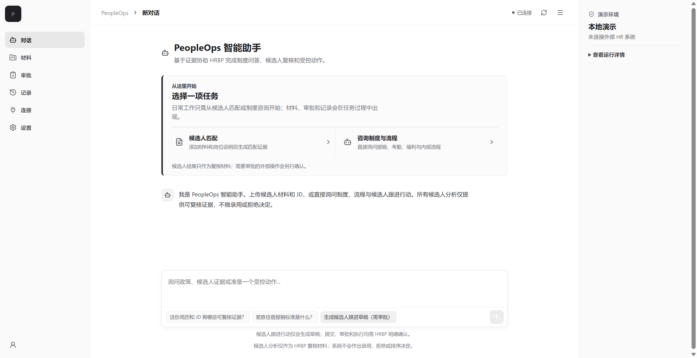
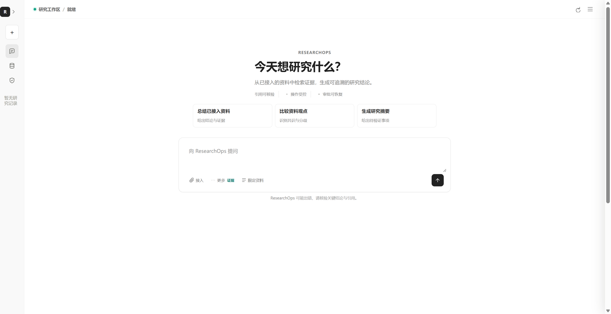
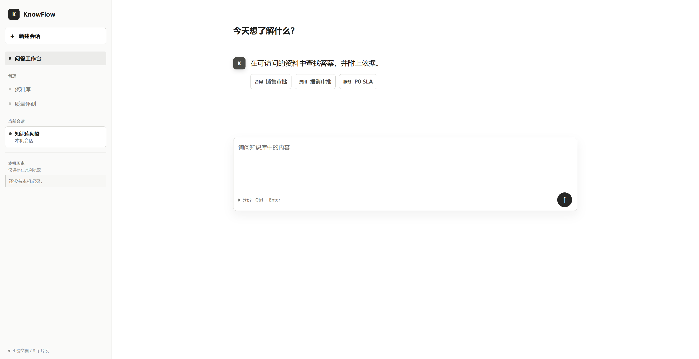
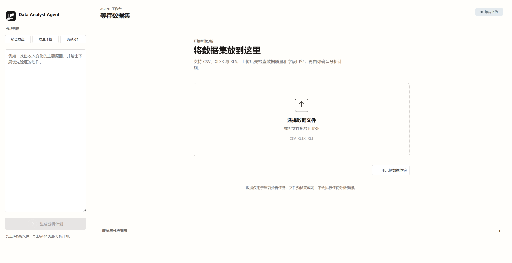

Evidence room / 2026
项目不是截图，证据构成作品
这里回答四个问题：解决了什么、我做了哪些产品判断、验证证据在哪里、当前边界是什么。
所有指标只描述当前实现和样例集，不等同于真实线上业务成效。
PeopleOps47 / 47单元测试通过；25 / 25 离线案例通过，2026-07-13
ResearchOps32 条pytest 与离线评测分列，分别复核任务队列、工具调用和运行状态
KnowFlow≥ 0.95主评测与 holdout 的通过门槛；这是标准，不作为实测成绩展示
边界本地原型四个项目只描述当前实现与样例集，不宣称生产成效
Verification path
四步完成一次项目复核
- 01读边界
先看 README、使用对象、运行方式和明确不做什么。
- 02读证据
检查 tests、evals、黄金轨迹与回归门禁。
- 03对界面
确认界面状态与 API、工作流、权限逻辑相互对应。
- 04跑起来
按照部署说明本地运行，观察成功、失败与重试路径。
01 / Flagship case
PeopleOps智能工作台
当前公开版本集中开发周期：–
不是一个 HR 聊天机器人，而是一套把政策回答、候选人动作、人工审批与审计放进同一条链路的 Agent 工作台。
用户场景面向 HRBP 与招聘运营，将政策问答、候选人动作、人工审批和审计串成一条可追溯流程。
关键判断候选人分析只输出来源证据；外部动作从草稿开始，必须显式提交并经审批执行。
当前证据2026-07-13：47 / 47 项单元测试、25 / 25 条离线案例通过，并保留失败案例与修复记录。
项目边界个人本地原型与确定性安全回归，不代表真实用户成效、外部连接器可用性或线上模型质量。

界面证据 01主工作台同时暴露来源、动作状态、审批与审计入口
90 秒真实产品演示从制度问答与引用证据，到受控动作、人工审批和任务记录。
Reproducible evaluation / 2026-07-13
一次可复核的离线评测记录
查看机器可读记录
- 日期与版本
- 2026-07-13；仓库修复版本
dfa4bd6 之后复跑
- 模型口径
- fixture 模式不调用生成模型；运行配置基线为
deepseek-chat，embedding 为 BAAI/bge-small-zh-v1.5
- 样本量
- 47 项单元测试；25 条离线案例：10 条黄金轨迹、10 条 RAG fixture、5 条候选人安全案例
- 结果
- 47 / 47 测试、25 / 25 离线案例通过；RAG fixture 通过率与引用正确率均为 100%，未检出 PII 泄漏
- 失败案例
- 曾允许客户端 tenant header 影响身份范围，存在伪造租户上下文风险；
dfa4bd6 改为从 OIDC / 可信 SSO 身份派生租户并增加 spoofed-header 回归测试
- 当前边界
- 这是本地确定性 fixture 与安全回归，不代表真实用户效果、外部连接器可用性或生成模型线上质量
关键决策候选人分析只输出带来源证据，不给录用结论；外部动作从草稿开始，必须显式提交、审批后执行。
02 / Agent workflow
ResearchOps研究流程 Agent
当前公开版本集中开发周期：–
让规划、工具调用、人工审批、失败与重试离开黑盒，变成一条可观察、可复核的执行时间线。
- Timeline
- Tool call
- Approval
- Retry
用户场景面向研究与分析团队，需要让多步骤任务中的规划、工具、审批、失败与重试可观察。
关键判断Planner 与工具执行层双重检查审批策略；批准后沿同一 run_id 恢复。
当前证据pytest 覆盖任务队列、工具注册和运行状态；32 条离线案例校验预定义轨迹与规则。
项目边界个人本地原型与离线样例，不代表真实研究产出质量、外部工具稳定性或多人协作成效。

界面证据 02每一步规划、工具调用、审批和重试都保留可观察状态
关键决策Planner 与工具执行层双重检查审批策略；批准后在同一 run_id 恢复，避免重新提问造成上下文漂移。
03 / Enterprise RAG
KnowFlow企业知识库
当前公开版本集中开发周期：–
不只连接向量库，而是同时处理检索质量、权限过滤、来源可信度与拒答边界。
- Hybrid search
- ACL
- Citation
- Refusal
用户场景面向企业员工和知识运营，在带权限的内部语料中获得有来源、能拒答的可信回答。
关键判断权限过滤先于相关性排序，未授权内容不进入分数、调试轨迹、引用或最终上下文。
当前证据主评测集与 holdout 集的 Recall@k、引用准确性等门槛均定义为 >= 0.95。
项目边界门槛是通过标准而非实测成绩；当前为本地样例语料和离线评测，不代表生产检索质量。

界面证据 03可信回答不仅显示结论，也显示引用、权限与拒答边界
关键决策权限过滤先于相关性排序，未授权内容不进入分数、调试轨迹、引用或最终上下文。
04 / Data product
Data Analyst数据分析 Agent
当前公开版本集中开发周期：–
先理解字段和数据质量，再允许受控执行，把一次性数据问答变成可检查、可导出的分析流程。
- Read-only SQL
- Sandbox
- Quality check
- Report
用户场景面向业务分析请求，从陌生字段、数据质量问题和自然语言问题进入可交付报告。
关键判断执行前由用户审批签名计划；Python 只在无网络、只读、降权的隔离环境中运行。
当前证据可检查字段与质量问题识别、SQL / Python 隔离执行，以及多格式报告输出路径。
项目边界个人本地原型与样例数据；功能路径不代表真实业务数据质量、分析准确性或生产吞吐。

界面证据 04从字段理解到隔离执行和报告输出，过程状态持续可检查
关键决策执行前由用户审批签名计划；生产 Python 只在无网络、只读、降权的 Docker worker 中运行，API 不持有 Docker socket。
End of evidence room
回到作品集，看证据如何构成能力
返回作品集